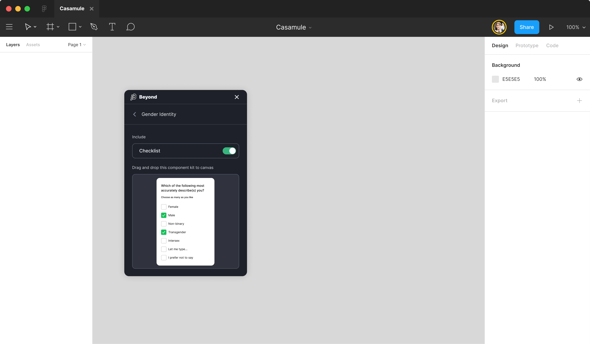
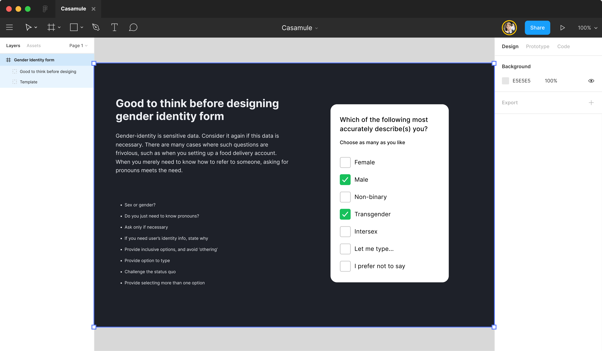

Problem
Binary gender forms (Male / Female radio buttons) exclude non-binary, agender, two-spirit, and questioning users. Required First Name + Last Name fields exclude users with mononymic naming traditions and people with single legal names. Title prefixes (Mr./Mrs.) impose gendered defaults at point of contact. Required gender fields where gender is irrelevant (a software signup form, say) collect data the product can’t justify storing.
The unifying problem: identity forms encode the designer’s assumed defaults as required structure, which becomes a wall for anyone whose identity doesn’t fit the schema.
Pattern
- Gender: free-text input with an optional select-list of common identifiers (“Woman,” “Man,” “Non-binary,” “Prefer to self-describe,” “Prefer not to say”). Never required unless legally needed. Don’t collect at all if the product doesn’t use it.
- Name: single “Full name” field by default. Add separate “Legal name” only where legally required (government identification, banking, regulated payments). Allow single-name entries; don’t require a last name.
- Pronouns: optional free-text or select with “self-describe” option. Display in the product where relevant (commit-author bylines, profile cards).
- Title prefix: omit unless legally required. If present, include “Mx.” and “none.”
- Sex assigned at birth: only collect where medically or legally required, separately from gender, with explicit explanation of why.
Visual examples


Code
The structural pattern is a combobox (select with self-describe) backed by a free-text fallback. Use semantic <label> association and autocomplete attributes where the browser can pre-fill correctly.
<!-- Name: single field, optional -->
<label for="name">Name</label>
<input id="name" name="name" type="text" autocomplete="name">
<!-- Gender: combobox with self-describe -->
<label for="gender">Gender (optional)</label>
<select id="gender" name="gender">
<option value="">Prefer not to say</option>
<option>Woman</option>
<option>Man</option>
<option>Non-binary</option>
<option value="self-describe">Prefer to self-describe</option>
</select>
<!-- Self-describe text input, revealed when "self-describe" is selected -->
<label for="gender-self-describe">Self-describe</label>
<input id="gender-self-describe" name="gender_self_describe" type="text">
<!-- Pronouns: optional -->
<label for="pronouns">Pronouns (optional)</label>
<input id="pronouns" name="pronouns" type="text" placeholder="e.g. she/her, they/them">Annotation
Mark each form field on the design with required vs optional, the data’s purpose, and the legal basis if applicable. Don’t collect what you can’t justify.
Field: Gender
Required: No
Purpose: profile display
Legal basis: none; drop if not needed
Self-describe: yesWCAG mapping
- 3.3.2 Labels or Instructions (opens in new tab) A clear, persistent labels for every field
-
1.3.5 Identify Input Purpose (opens in new tab)
AA
autocompleteattributes for known input purposes - 3.3.1 Error Identification (opens in new tab) A specific, programmatically-determinable validation errors
Related patterns
- Inclusive UX copy (#03), the labels and helper text on each field
- Focus order & keyboard navigation (#06), the field tab order, especially when self-describe reveals a new input